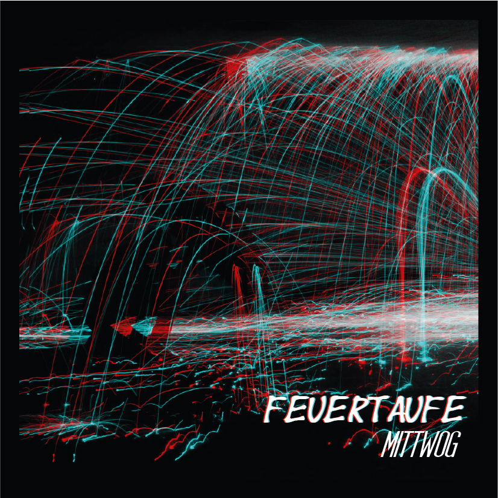
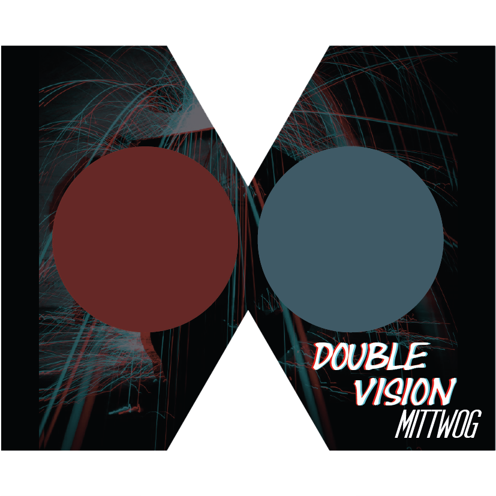

Oskar Roth (25) en Anna Hauer (24)
zijn beste vrienden sinds de
hogeschool. Ze studeerden beiden
muziek op de universiteit in Berlijn
en gingen elke woensdag na de
lesuren jammen op Oskars kot.
Oskar draaide hierbij nummers als
DJ en Anna zong.
Na enkele jamsessies besloten ze
samen zelf een nummer op te
nemen. Niet alleen op school, maar
ook in de studio bleken ze voor
elkaar gemaakt te zijn, en sindsdien
zijn ze onafscheidelijk. Zo ontstond
MITTWOG. Ze schuimden allerlei
Drum and Bass feestjes af, eerst als
feestgangers, later als het iconische
Neurofunk duo.
Beiden zijn steeds herkenbaar door
hun opvallende outfits, steeds
afgewerkt met een set bretellen en
een vlinderstrik. Ze houden van
opvallen, en het liefst nog samen.
Maar ze vinden het beiden belangrijk
ieders hun eigen identiteit te
behouden, dus ze zullen nooit
dezelfde kleuren dragen. Als Oskar
zwart draagt, draagt Anna wit, en
anders onderscheiden ze zich wel
met de kleuren van hun bretellen.


200 BpM
Die STILLE
€27,99
€31,99
 Feuertaufe
Double Vision
€36,99
€36,99